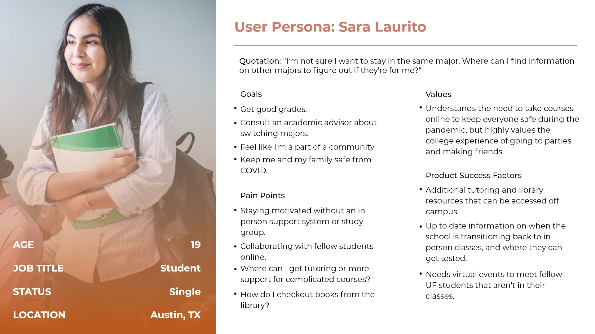

Research
During the research phase, each team member individually completed a competitor analysis, developed three user personas, and conducted a cognitive walkthrough and heuristic analysis.
We then analyzed our findings (potential pain points), to develop user scenarios and tasks for testing.
Competitor Analysis
University of Central Florida
Advantages: Their mobile application seems like a great way to keep track of COVID symptoms of students and staff, and it’s a nice addition. The FAQ section has categories which could make it easier to find a question related to one of the topics listed. They have more resources and content related to the student experience and teaching tools for faculty. Sub pages for specific users had better navigation.
Hindrances: I didn’t realize that the circular icons at the top of the page were links to resources. Apart from this, the navigation and organization of the information makes it really easy to find content specific to a particular user type.
Carnegie Mellon University
Advantages: The have a separate page for faculty and staff. Breaking these into different user types makes sense, because staff will have different priorities than instructors.
Hindrances: Page navigation for specific user types is lacking. “Tartan testing” related information doesn’t stand out on the page when that really should be a major call to action.
User Personas

Cognitive Walkthrough and Heuristic Analysis
Some key issues found in the cognitive walkthrough and heuristic analysis included:
- Lack of consistency in links and buttons
- Most relevant and important information being located at the top of the page
- Links that lack enough context for users to understand where they lead to
View Usability Aspect Report
Testing
Each team member conducted and observed one user test respectively, for a total of 5 user tests.
Methodology
What we tested?
The University of Florida website and it’s usability was tested.
Who we tested?
Five users participated in this testing. The users came from all different age groups, backgrounds and experience levels when it comes to website navigation.
Where we tested?
All testing took place via Zoom.
When we tested?
Testing took place from March 29 through April 7, 2021.
How?
A one-on-one usability test was conducted for all test sessions. There were three people present including the facilitator, an observer, and an interviewee. Each test took under an hour to complete. Each usability test session included a facilitator, an observer, and an interviewee.
Test Plan
The facilitator conducted the interview—interacting with the user, clarifying tasks, asking questions, etc. The observer took notes during the session, marking down reactions, issues, and other key events.
Users were given three different scenarios throughout the session before being asked to complete specific tasks related to the scenarios. All users were encouraged to think aloud while completing tasks and were given opportunities to ask questions throughout the interview. After each task, facilitators verbally asked post-task questions, and a post-test questionnaire was given via Google Forms after the completion of the session.
Scenarios
- Undergraduate student at UF who is looking to change majors
- Parent whose child is overwhelmed with their current workload and class schedule, visiting the University of Florida website in order to look for counseling resources and information on adding/dropping courses
- Math professor who just moved to Gainesville, looking for job openings and math courses being offered at UF
Analysis and Reporting
By analyzing the collected qualitative and quantitative data, we pinpointed a total of eight key user issues to address.
There are three key user issues that I would like to highlight from the final Usability Findings Report in this presentation.
1. User Issue: Inconsistency in available link back to homepage
Explanation: There were parts of the site where users were unable to find a link back to the main homepage. Some subdomains had the UF logo as the link; some subdomains had the same logo but with a different link (rather than the main homepage); and some did not have the logo at all (only the logo of the department).
Overall, this inconsistency in the use of the square UF logo caused confusion among users because they expected the header of the site to behave/look similarly.
2. User Issue: Top navigation item dropdown unclear (“Welcome to UF”)
Explanation: Users don’t realize the dropdown navigation item is something you can interact with to get to specific user-centered content. The drop-down submenu doesn’t clearly indicate that there are more menu items that can be chosen from, confusing all users.
The word choice used also did not help users understand that it was a dropdown. They read it as just supplemental copy in the header.
3. User Issue: Users struggled to find the link for job listings, and it was unclear where the faculty page was.
Explanation: Users had a difficult time finding a link for the job listings. Users scrolled to the footer assuming that they would easily find a careers or job listing link there.
Eventually, some users found a link to jobs in the blue section above the footer and noted that they didn’t notice it at first because the background and buttons in that section were both blue. Users who didn’t find the link gave up on the task altogether and couldn’t continue with that part of the scenario.

Recommendations
There are three recommendations that I would like to highlight from the final Usability Findings Report.
1. User Issue: Inconsistency in available link back to homepage
Recommendation: To resolve the issue resulting from inconsistency, subdomains should aim to use the square UF logo as a link back to the main homepage in the header. While we understand that some departments may want to use slightly different themes/designs than the main page, having a consistent element across the board will alleviate confusion among users navigating through different parts of the site.
2. User Issue: Top navigation item dropdown unclear (“Welcome to UF”)
Recommendation: Change the color of the menu item or add text to make the button a call to action such as “Learn more”. A final and simple solution would be to include the submenu in the main navigation menu.
Example (outlined in black) of how the University of Houston adds links for specific users.
3. User Issue: Users struggled to find the link for job listings, and it was unclear where the faculty page was.
Recommendation: In order to meet user expectations, a link to the job listings page should be included in the footer. The link could be labeled “Careers” or “Jobs.” The buttons in the blue section above the footer should be given a contrasting color to stand out. To maintain consistency with University of Florida’s brand, they should be orange.
Final Thoughts and Lessons Learned
Conducting a cognitive walkthrough and heuristic analysis is a great starting point for developing a test plan for an existing website.
User testing can be time consuming and exhausting for participants. Suggest taking short breaks during the session to help them maintain their focus and the quality of their feedback.
Facilitators and observers won’t be able to take notes or remember everything the user says. Recordings are important so that researchers and their team members can reference back to them.